Estatística básica
[EM CONSTRUÇÃO]
Análise de Regressão
Os métodos de análise de regressão formam um conjunto de poderosas ferramentas estatisticas, que estudam a relação entre duas ou mais variaveis. Por ser de facil interpretação, essas ferramentas podem se aplicar nas mais diversas àreas e situações, como por exemplo: faixa salarial e nível de educação, consumo de açúcar e percentual de gordura, quantidade de fertilizante e crescimento da planta, quantidade gasta em publicidade e quantidade de vendas de um produto, consumo de contéudo na TV e faixa etária, etc. Esse conjunto de ferramentas nos permite lidar com os três tópicos mais comuns quando se trata de regressão:
- Modelagem: Cria uma equação que descreve a relação entre as variáveis em questão,de forma parcimoniosa;
- Covariância: Estuda a variação entre as variâveis que aparentemente não tem relação entre si;
- Predição: Estima os resultados do modelo para situações incertas.
O termo regressão foi criado por Francis Galton no século 19 durante seu estudo sobre a relação entre a altura de pais e filhos, desenvolvido no artigo Regression Toward Mediocrity in Hereditary Stature. Hoje aplicamos estas tecnicas com o apoio da programação, aqui faremos uso do software RStudio.
1. Regressão Linear Simples
Nesta sessão estudaremos as técnicas de regresão aplicadas à duas variaveis que relacionam de forma linear, isto é, essa relação pode ser descrita por uma reta.
Vamos dar uma olhada nos dados idade e teor de gordura no sangue que seguem abaixo:
## # A tibble: 6 x 2
## Idade Gordura
## <dbl> <dbl>
## 1 46 354
## 2 20 190
## 3 52 405
## 4 30 263
## 5 57 451
## 6 25 302Como pode-se notar no gráfico, a relação entre idade e teor de gordura no sangue aparentemente linear.

Sabemos que na matemática básica, a relação linear é descrita como:
\[Y_i = a+bX_i\] onde:
- \(Y\) são as \(i\) variáveis dependentes;
- \(a\) é o intercepto;
- \(b\) é o coeficiente angular; - \(X\) são as \(i\) variáveis independetes;
- \(i=1,2,3...\).
No caso do exemplo, a relação entre Idade e Teor de Gordura no Sangue pode ser descrita por:
\[\hat{y}_i = 102.6 + 5.3x_i\]
1.1 Modelo
Em regressão linear, a estrutura é quase a mesma. Mudamos o nome dos parâmetros \(a\) e \(b\) para as letras gregas \(\beta_0\) e \(\beta_1\) respectivamente e adicionamos o termo \(\varepsilon_i\), que vai representar o erro (também chamado de ruído) de cada observação (já que, quando coletamos determinado medida em um experimento, essa medição é passivel de pequenos erros a cada coleta). Então, o modelo de regressão linear simples é:onde:
- \(Y\) são as \(i\) variáveis independentes (ou resposta para a i-ésima obervação);
- \(\beta_0\) é o intercepto;
- \(\beta_1\) é o incremento de \(X_i\) em \(Y_i\);
- \(X\) são as \(i\) variáveis independetes (ou conhecidas);
- \(\varepsilon_i\) são os erros aleatórios associados a cada observação \(X_i\);
- \(i=1,2,3...\).
\[Y_i =\beta_0+\beta_1X_i + \varepsilon_i\]
Quando aplicamos este modelo aos nosso dados, teremos os valores ajustados ou estimados, i.e.:
\[\hat{Y_i}= \hat{\beta_0}+\hat{\beta_1}X_i\] Nestes valores ajustados estão contidos os resíduos, que são a diferença entre o valor verdadeiro da variável resposta e o valor estimado pelo modelo, respectivamente:
\[\epsilon_i=Y_i-\hat{Y_i}\] \[\qquad\qquad\quad=Y_i-\hat{\beta_0}+\hat{\beta_1}X_i\]
Vale lembrar que erro e resíduo não são a mesma coisa:
- O erro aleatório \(\varepsilon_i\) do modelo se refere ao contexto populacional, antes do ajuste do modelo e amostragem.
- O resíduo \(\epsilon_i\) se refere ao contexto amostral, após o modelo ser ajustado com base na amostra coletada.
A primeira suposição a respeito deste modelo a respeito dos erros:
- O valor esperado dos erros é sempre zero: \(E[\varepsilon_i]=0 \quad\forall i\);
- Sua variância é sempre constante \(Var[\varepsilon_i]=\sigma^2\quad\forall i\);
- Eles não são correlacionados: \(Cov(\varepsilon_i, \varepsilon_j)=0 \quad \forall\quad i \ne j\).
- Eles seguem a distribuição de probabilidade normal e são independentes e identicamente distribuidos: \(\varepsilon \stackrel{iid}{\sim} N(0, \sigma^2)\)
Voltando ao exemplo, na figura abaixo temos as representações dos parâmetros nas partes em destaque: \(\beta_0\) como intercepto, isto é, ponto em que a reta corta o eixo \(Y\); \(\beta_1\) como incremento em \(Y\) para cada uma unidade de \(X\); e por fim \(\varepsilon_i\) como a distância entre a reta de regressão e a observação \(X_i\).
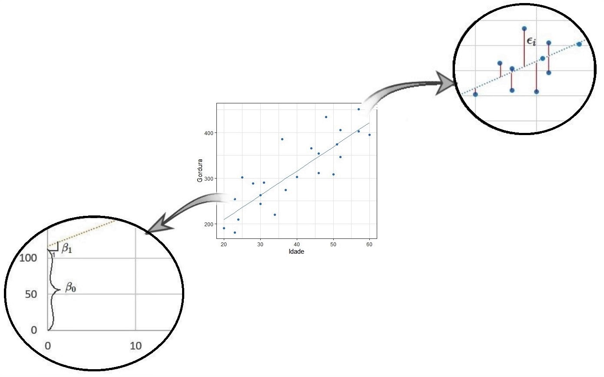
Deste modo, nosso modelo de regressão linear simples que descreve a relação entre idade e teor de gordura no sangue é:
\[\hat{y}_i = 102.6 + 5.3x_i+\varepsilon_i\] para \(i=1,2,...,24,25\).
1.2 Propriedades do modelo
Agora que conhecemos o modelo, vamos conferir algumas de suas propriedades. Sabemos então qe \(Y_i\) são as variáveis resposta e que \(\varepsilon_i\) são variáveis aleatórias correspondentes aos erros. Como o valor esperado de \(\varepsilon_i\) é sempre zero, então:
\[E[Y_i]=E[\beta_0+\beta_1X_i+\varepsilon_i]\] \[\qquad\quad=E[\beta_0+\beta_1X_i]+E[\varepsilon_i]\] \[\qquad\quad=E[\beta_0+\beta_1X_i]+0\quad\] \[\qquad=\beta_0+\beta_1X_i\quad\qquad\]
\(\qquad\qquad Var[Y_i]=Var[\beta_0+\beta_1X_i+\varepsilon_i]\)
\(\qquad\qquad\qquad\quad = Var[\varepsilon_i]\qquad\qquad\)
\(\qquad\qquad\qquad\quad = \sigma^2\qquad\qquad\)
Além disso, como os erros \(\varepsilon_i\) e \(\varepsilon_j\) não correlacionados, então as respostas \(Y_i\) e \(Y_j\) também não serão.
1.2 Estimação dos parâmetros
Mas afinal, como determinamos os valores de \(\beta_0\) e \(\beta_1\)? Para resolver essa questão, temos dois métodos estatisticos: método de mínimos quadrados e método da máxima verossimilhança. Em ambos o objetivo é sempre encontrar um \(\beta_0\) e \(\beta_1\) que nos dê a melhor reta em relação aos dados.
1.2.1 Método de Mínimos Quadrados (MMQ)
Para encontrar a melhor reta, este método minimiza a soma dos erros \(\varepsilon_i\), ou seja, a soma das distâncias entre a reta e os dados coletados. Como estamos somando o tamanho desse erros, elevamos seus valores ao quadrado, então temos:
\[\varepsilon_1^2+\varepsilon_2^2+\varepsilon_3^2+...+\varepsilon_n^2 = \sum_{i=1}^{n} \varepsilon_i^2\]
para \(i= 1,2,3,...n.\), i.e. para n observações. Como \(\varepsilon_i = Y_i-(\beta_0+\beta_1X_i)= Y_i-\beta_0-\beta_1X_i\), então queremos encontrar um \(\beta_0\) e \(\beta_1\) tal que minimize \(Q\):
\[Q=\sum_{i=1}^{n} \varepsilon_i^2=\sum_{i=1}^{n} (Y_i-\beta_0-\beta_1X_i)^2\] Para encontrar essas estimativas analiticamente nos baseando no modelo de regressão simples, usaremos as duas equações que seguem abaixo,conjuntamente:
\[\sum_{i=1}^{n}Y_i = n\beta_0-\beta_1\sum_{i=1}^{n}X_i\] \[\sum_{i=1}^{n}X_iY_i = \beta_0\sum_{i=1}^{n}X_i-\beta_1\sum_{i=1}^{n}X_i^2\] Essa equações, também chamadas de equações normais, podem ser derivadas em relação aos parâmetros:
\[\frac{\partial Q}{\partial \beta_0}=-2\sum_{i=1}^{n}(Y_i-\beta_0-\beta_1X_i)\]
\[\frac{\partial Q}{\partial \beta_1}=-2\sum_{i=1}^{n}X_i(Y_i-\beta_0-\beta_1X_i)\]
Igualando essas derivadas à zero, encontramos os valores de \(\beta_0\) e \(\beta_1\) que minimizam \(Q\):
\[-2\sum_{i=1}^{n}(Y_i-\hat{\beta}_0-\hat{\beta}_1X_i)=0\] \[-2\sum_{i=1}^{n}X_i(Y_i-\hat{\beta}_0-\hat{\beta}_1X_i)=0\]
Dividindo os dois lados das equações por \(-2\): \[\sum_{i=1}^{n}(Y_i-\hat{\beta}_0-\hat{\beta}_1X_i)=0\] \[\sum_{i=1}^{n}X_i(Y_i-\hat{\beta}_0-\hat{\beta}_1X_i)=0\]
Expandindo as equações, conseguimos chegar nas equações normais: \[\sum_{i=1}^{n}Y_i-n\hat{\beta}_0-\hat{\beta}_1\sum_{i=1}^{n}X_i=0\] \[\sum_{i=1}^{n}X_iY_i-\hat{\beta}_0\sum_{i=1}^{n}X_i-\hat{\beta}_1\sum_{i=1}^{n}X_i^2=0\]
\(\qquad\qquad\qquad\qquad\qquad\qquad\qquad\qquad\qquad\) Equações Normais
\[\sum_{i=1}^{n}Y_i\quad=n\hat{\beta}_0+\hat{\beta}_1\sum_{i=1}^{n}X_i\] \[\sum_{i=1}^{n}X_iY_i\quad=\hat{\beta}_0\sum_{i=1}^{n}X_i+\hat{\beta}_1\sum_{i=1}^{n}X_i^2\]
A partir delas conseguim ao isolar os parâmetros e obter as estimações. Para mais detalhes desta etapa, veja a Apêndice: Demonstração 1.
\[\hat{\beta}_0=\bar{Y}-\beta_1\bar{X}\]
\[\hat{\beta}_1 = \frac{\sum_{i=1}^{n}(X_i-\bar{X})(Y_i-\bar{Y})}{\sum_{i=1}^{n}(X_i-\bar{X})}\]
As vantagens do método dos mínimos quadrados é que, além de ser comumente usado, ele é comportado pelos programas de estatística de modo geral.
Entretanto, precisamos de certos requisitos para poder usar ele:
- Lineariedade dos dados: seu comportamento pode ser decrito por uma reta
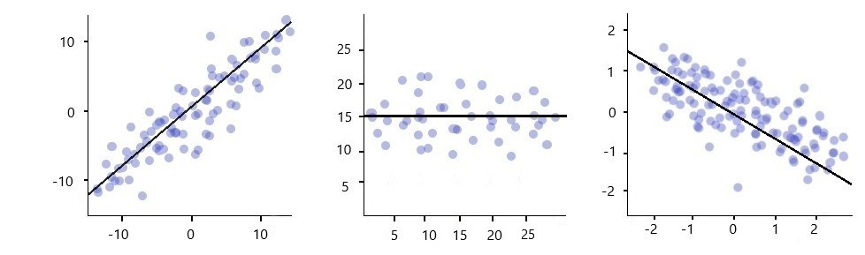
- Normalidade dos resíduos: os resíduos do modelo seguem uma distribuição aproximadamente normal, i.e., \(\epsilon \cong N(\mu, \sigma^2)\).
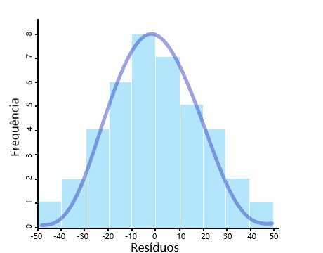
- Homocedasticidade: a variabilidade dos resíduos é constante., ou seja, \(Var(\epsilon)=c\).
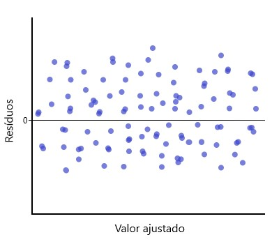
- Erros sem autocorrelação: Os valores ordenados não tem relação com o espaço ou tempo. Matematicamente, \(\epsilon_i\) e \(\epsilon_j\) tem \(Cov(\epsilon_i, \epsilon_j)=0, \forall i \ne j\).
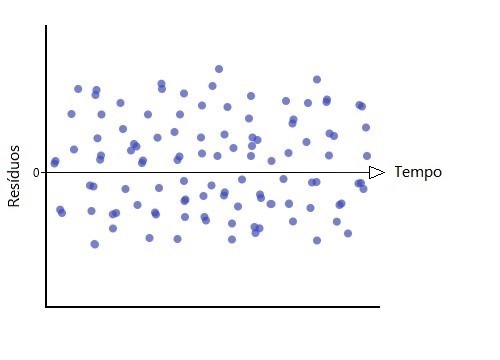
1.2.1.1 Propriedades dos estimadores de MMQ
Os estimadores \(\hat{\beta}\) obtidos pelo método de método de mínimos quadrados são funções lineares de Y (Apêndice: Demonstação 2). E segundo o Teorema de Gauss Markov, dado as condições do modelo de regressão linear, o método de mínimos quadrados:
Tem estimadores \(\beta_0\) e \(\beta_1\) não viesados, i.e., o valor esperado do estimador é ao próprio arametro que foi estimado: \(E[\hat{\beta_0}]= \beta_0\) e \(E[\hat{\beta_1}]= \beta_1\). Isso acontece independente da distribuição de probabilidade desses erros (Apêndice: Demonstação 3).
Tem variância mínima entre todos os estimadores não viesados e lineares.
\[Var[\hat{\beta_0}]=\sigma^2\Bigg[\frac{1}{n}+\frac{\bar{X}^2}{\sum_{i=0}^{n}(X_i-\bar{X}^2)}\Bigg]\]
\[Var[\hat{\beta_1}]=\frac{\sigma^2}{\sum_{i=0}^{n}(X_i-\bar{X})^2}\]
Logo eles são os mais precisos entre esse tipo de estimador.
- Os estimadores de mínimos quadrados tem distribuição de probabilidade Normal.
\[\hat{\beta_0} \sim N\Bigg(\beta_0, \sigma^2\Bigg[\frac{1}{n}+\frac{\bar{X}^2}{\sum_{i=0}^{n}(X_i-\bar{X}^2)}\Bigg]\Bigg)\]
\[\hat{\beta_0} \sim N\Bigg(\beta_1,\frac{\sigma^2}{\sum_{i=0}^{n}(X_i-\bar{X}^2)} \Bigg)\]
Além disso, temos que:
- Considerando \(\sum_{i=1}^{n}(X_i-\bar{X})(Y_i-\bar{Y})=S_{xy}\) como a soma dos produtos de X e Y, \(\sum_{i=1}^{n}(X_i-\bar{X})=S_{XX}\) como a soma dos quadrados de X, podemos afirmar que:
\[\hat{\beta}_1 = \frac{\sum_{i=1}^{n}(X_i-\bar{X})(Y_i-\bar{Y})}{\sum_{i=1}^{n}(X_i-\bar{X})}=\frac{S_{xy}}{S_{xx}}\]
Esses estimadores são funções lineares das observações das variáveis resposta \(y_i\).
Suas variâncias são proporcionais as variâncias dos erros
São estimadores correlacionados
Veja mais detalhes sobre os resultados acima em Demonstração X.
1.2.1.3 Exemplo no R
Para reproduzir o exemplo exibido no inicio do capítulo, precisaremos carregar os pacotes readr e ggplot2.
#carregando os pacotes necessários
library("readr")
library("ggplot2")Em seguidas vamos ler os dados obtidos na página.
dados = read_table2("https://people.sc.fsu.edu/~jburkardt/datasets/regression/x09.txt", col_names = FALSE ,skip = 36) #lendo apenas a tabela de dados
dados = dados[,c(4,5)]#seleciona as duas ultimas colunas
colnames(dados) = c("Idade", "Gordura") #renomendo as colunas
head(dados) #Mostra as 6 primeiras linhas da tabela## # A tibble: 6 x 2
## Idade Gordura
## <dbl> <dbl>
## 1 46 354
## 2 20 190
## 3 52 405
## 4 30 263
## 5 57 451
## 6 25 302Com os dados já separados, ajustaremos um modelo de regressão linear simples.
ajuste <- lm(Gordura ~ Idade, dados) #ajuste do modelo
summary(ajuste) #exibe os resultados detalhados do ajuste##
## Call:
## lm(formula = Gordura ~ Idade, data = dados)
##
## Residuals:
## Min 1Q Median 3Q Max
## -63.478 -26.816 -3.854 28.315 90.881
##
## Coefficients:
## Estimate Std. Error t value Pr(>|t|)
## (Intercept) 102.5751 29.6376 3.461 0.00212 **
## Idade 5.3207 0.7243 7.346 1.79e-07 ***
## ---
## Signif. codes: 0 '***' 0.001 '**' 0.01 '*' 0.05 '.' 0.1 ' ' 1
##
## Residual standard error: 43.46 on 23 degrees of freedom
## Multiple R-squared: 0.7012, Adjusted R-squared: 0.6882
## F-statistic: 53.96 on 1 and 23 DF, p-value: 1.794e-07Dado dos coeficientes do ajuste, ambos significativos, temos o modelo
\[\hat{y}_i = 102.6 + 5.3x_i\]
E partir dele, podemos fazer o gráfico da reta dos valores preditos sobre os valores observados.
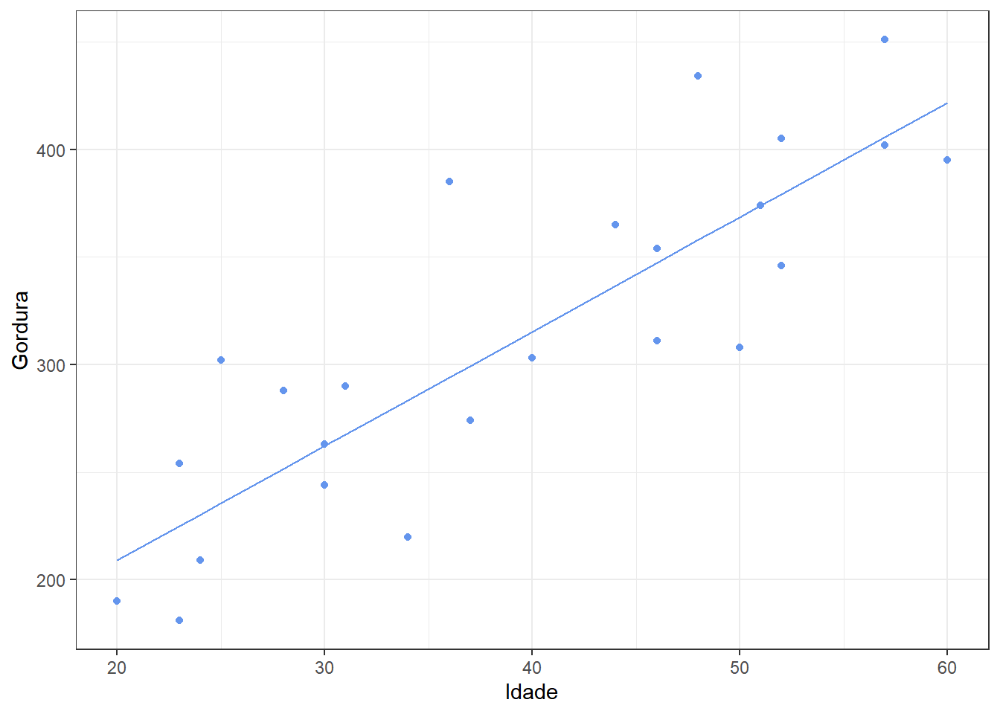
1.2.2 Método da Máxima Verossimilhança (MMV)
O método de máxima verossilimilhança utiliza o produtos das densidades das distribuição de probabilidade de \(Y_i\) como uma medida para a consistência dos parâmetros para aquela amostra. Assim o método escolhe os valores máximos da verossimilhança estimada, tal que os valores dos paramêtros sejam mais consistentes.
Aqui, por ser mais simples, usaremos a log-verossimilhança negartiva. Partindo do fato que \(E(Y_i) = \beta_0-\beta_1X_i\) e \(Var[Y_i]=\sigma^2\), então a função densidade de probabilidade de \(Y_i\) será:
\[f_i=\frac{1}{\sqrt {2\pi\sigma} }exp\bigg[-\frac{1}{2}\bigg(\frac{Y_i-\beta_0-\beta_1X_i}{\sigma}\bigg)^2 \bigg]\]
Fazendo o produtório das n densidades, correspondentes a cada uma das n observações, temos a função de máxima verossimilhança. Nela consideramos que a variância dos erros de cada observação é desconhecida:
\[\mathcal{L}(\beta_o, \beta_1, \sigma^2)= \prod_{i=1}^{n} \frac{1}{(2\pi\sigma^2)^{1/2}}exp\bigg[-\frac{1}{2\sigma^2}(Y_i-\beta_0-\beta_1X_i)^2 \bigg]\] Simplificando a equação temos: \[\mathcal{L}(\beta_o, \beta_1, \sigma^2)=\frac{1}{(2\pi\sigma^2)^{n/2}}exp\bigg[ -\frac{1}{2\sigma^2}\sum_{i=1}^{n}(Y_i-\beta_0-\beta_1X_i)^2\bigg]\]Para encontrar as estimativas dos parâmetros precisaremos fazer as derivadas parciais de \(L(\beta_o, \beta_1, \sigma^2)\) em relação a cada parâmetro. Como \(L(\beta_o, \beta_1, \sigma^2)\) e \(ln(\mathcal{L}(\beta_o, \beta_1, \sigma^2))\) são equações que maximizam a verossimilhança, podemos trabalhar com ambos. Note que usaremos a seguinte notação:
\[L(\beta_o, \beta_1, \sigma^2) = -\frac{n}{2} ln( 2\pi) -\frac{n}{2} ln(\sigma^2)-\frac{1}{2\sigma^2}\sum_{i=1}^{n}(y_i-\beta_0-\beta_1x_i)^2\]
Mas escolhemos o logaritmo da função de máxima verossimilhança por ser mais facil de derivar. Seguem as derivadas particias dos parâmetros, já igualadas a zero:
\[\frac{\partial L(\beta_o, \beta_1, \sigma^2)}{\partial \beta_0}\quad= -\frac{1}{\sigma^2}\sum_{i=1}^{n}(y_i-\beta_0-\beta_1x_i)=0\]
\[\quad\quad=\sum_{i=1}^{n}(y_i-\beta_0-\beta_1x_i)=0\] \[\sum_{i=1}^{n}y_i=n\beta_0+(\sum_{i=1}^{n}x_i)\beta_1\] \[\hat{\beta}_0=\bar{Y}-\beta_1\bar{X}\]
\[\frac{\partial L(\beta_o, \beta_1, \sigma^2)}{\partial \beta_1} \quad= -\frac{1}{\sigma^2}\sum_{i=1}^{n}(y_i-\beta_0-\beta_1x_i)=0\] \[\quad\quad\quad\quad\quad\quad=\sum_{i=1}^{n}(y_i-\beta_0-\beta_1x_i)x_i=0\] \[\sum_{i=1}^{n}y_ix_i=(\sum_{i=1}^{n}x_i)\beta_0+(\sum_{i=1}^{n}x_i^2)\beta_1 \]
\[\hat{\beta}_1 = \frac{\sum_{i=1}^{n}(X_i-\bar{X})(Y_i-\bar{Y})}{\sum_{i=1}^{n}(X_i-\bar{X})}\]
\[\frac{\partial L(\beta_o, \beta_1, \sigma^2)}{\partial \sigma^2}=\frac{n}{\hat{\sigma}^2}-\frac{1}{\hat{\sigma}^4}\sum_{i=1}^{n}(Y_i-\beta_0-\beta_1X_i)=0\]
\[\frac{n}{\hat{\sigma}^2}=\frac{1}{\hat{\sigma}^4}\sum_{i=1}^{n}(Y_i-\beta_0-\beta_1X_i)\] \[n=\frac{1}{\hat{\sigma}^2}\sum_{i=1}^{n}(Y_i-\beta_0-\beta_1X_i)\]
\[\hat{\sigma}^2=\frac{1}{n}\sum_{i=1}^{n}(Y_i-\beta_0-\beta_1X_i)^2\] Como \(\hat{Y}_i=\beta_0-\beta_1X_i\), então:
\[\hat{\sigma}^2=\frac{\sum_{i=1}^{n}(Y_i-\hat{Y}_i)^2}{n}\]
1.2.2.1 Propriedades dos estimadores de (MMV)
Esse estimador é do tipo um estimador viesado para p parâmetro da variância \(E[\hat{\sigma^2}]=\frac{n-1}{n}\sigma^2\). Mas medida que n cresce, \(\hat{\sigma^2}\) tende a ser não viesado:
\[lim_{n \to \infty }E[\hat{\sigma^2}]=lim_{n \to \infty} \frac{n-1}{n}\sigma^2=\sigma^2\]
Contudo ele é muito confiavel devido algumas propriedades:
- Consistência;
- Eficiência Assintótica;
- Normalidade Assimptótica;
- Invariância.
1.3 Análise de Resíduos
Como já citado anteriormente, os resíduos são a diferença entre o valor verdadeiro da variável resposta e o valor estimado pelo modelo, respectivamente:
\[\epsilon_i=Y_i-\hat{Y_i}\] Eles são usados para avaliar o quão bom é o ajuste do modelo, já que, toda variabilidade não explicada pelo modelo, vai para os resíduos. Para isso vamos verificar seis caracteristicas:
- Se a regressão ajustada é uma função linear;
- Se os erros tem variância constante;
- Se os erros são independentes;
- Se os erros tem distribuição normal;
- Se o modelo não se ajusta para alguns outliers;
- Se uma ou mais variaveis preditoras podem ser retiradas do modelo.
Um dos gráficos mais usados para avaliar se a função é linear e foi bem ajustada é o gráfico de pontos dos resíduos pelos valores ajustados:
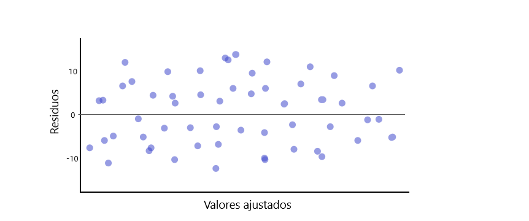
Em um ajuste satisfatório teremos pontos aleatórios em torno da reta horizontal (que marca o resíduo igual a zero) e que variam de forma constante, como na figura (a). Quando isso não acontece (como nas demais imagens), temos resíduos viesados, os quais podem nos dar pistas sobre o comportamento não captado pelo modelo ajustado. Por exemplo, na figura (b) temos uma comportamento claramento quadrático e na figura (c) uma tendência linear positiva, essas caracteristicas não devem aparecer nos resíduos e sim no modelo ajustado. Se você se deparar com essa situação, refaça seu modelo.
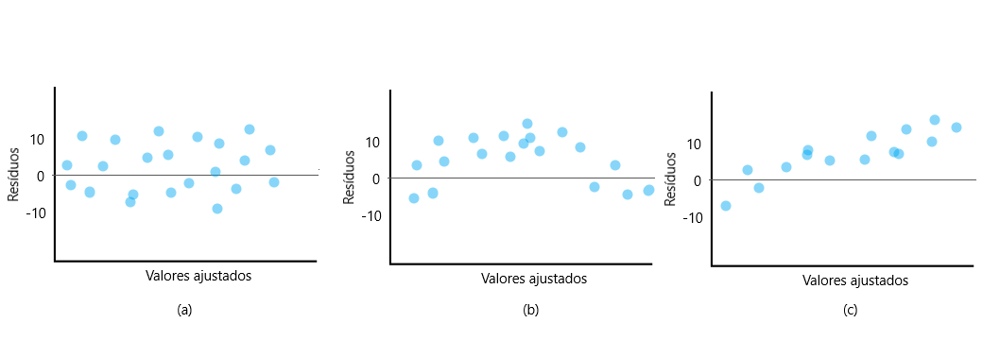
Além disso é importante lembrar que, quando o valor de um i-ésimo resíduo \(\epsilon_i\) for:
- Positivo, significa que o modelo subestimou a observação
\[\epsilon_i>0 \quad \to \quad Y_i-\hat{Y_i}>0 \quad \to \quad Y_i>\hat{Y_i}\]
- Negativo, significa que o modelo superestimou a observação
\[\epsilon_i<0 \quad \to \quad Y_i-\hat{Y_i}<0 \quad \to \quad Y_i<\hat{Y_i}\] Outro gráfico importante é o dos resíduos absolutos (ou residuos ao quadrado) versus a variável X (preditora) ou os valores ajustados de Y (i.e. \(\hat Y\)). Este gráfico é util para checarmos a variância dos resíduos é ou não constante, bem como a presença de outliers.
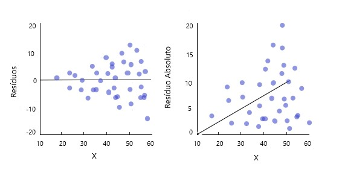
Já a independência dos erros pode ser avaliada pelo simples gráfico de pontos dos resíduos em relação a variável preditora ou em relação ao tempo, pois com eles conseguimos ver se há a relação de um i-ésimo resíduo com os demais próximos a ele.
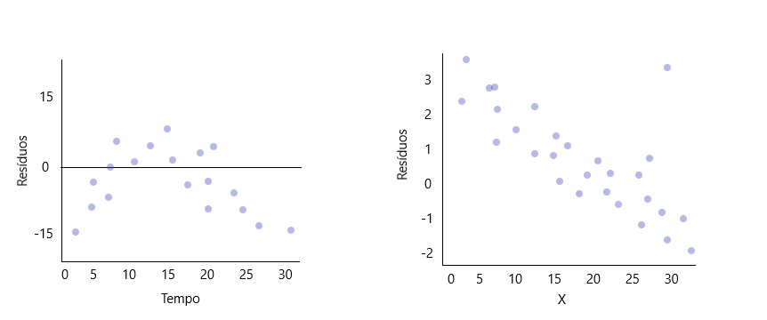
Por fim e não menos importante, devemos checar a normalidade dos resíduos. Isso pode ser feito por diversos gráficos: gráfico da distribuição (Box plot, histograma, gráfico de pontos ou gráfico de ramos e folhas); gráfico de comparação de frequências; gráfico de normalidade dos resíduos (o mais usado).
1.3.1 Correlação
As relações entre as variáveis ajustadas no modelo podem ser fortes ou fracas e avaliar essa força é muito importante para a avaliação do modelo. Uma forma de quantificar essa força é pelo correlação, denotada pela letra R. Suponha que temos um conjunto de dados \((x_1,y_1),(x_2,y_2),...,(x_n,y_n)\), sua correlação é dada por:
\[R = \frac{1}{n-1}\sum_{i=1}^{n} \frac{x_i-\bar{x}}{s_x} \frac{y_i-\bar{y}}{s_y}\] onde \(\bar{x}\), \(\bar{y}\), \({s_x}\) e \({s_y}\) são respectivamente as médias e desvio padrão amostral das variáveis x e y.
Os valores de R serão sempre entre -1 e 1. Quanto mais próximo de 1, mais forte é a correlação linear positiva entre as variáveis. E quanto mais próximo de -1, maior é a correlação linear negativa entre as mesmas. Abaixo temos a imagem que representa as duas situações: em (a) temos três casos de correlação linear positiva e em (b) temos os casos para correlação linear negativa.
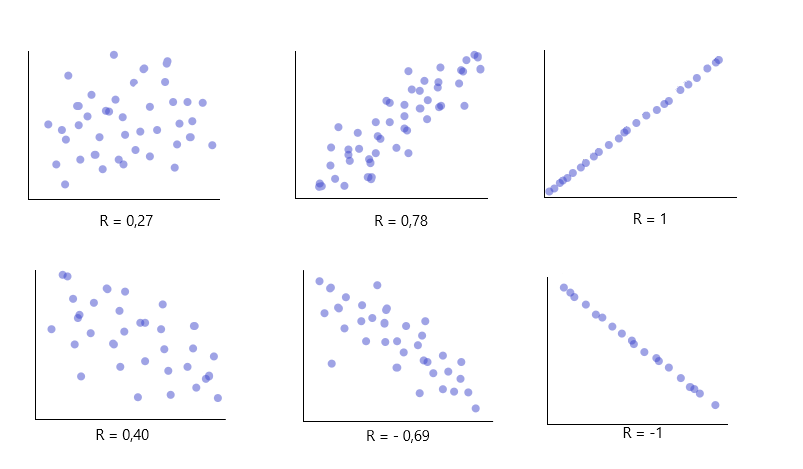
1.3.1 Coeficiente de Determinação
R² ajustado
Análise de Variância
Applied regresion pag 52,65-68 Applied Linear Statistical Models 5th pag 87-97
a)pq fazer b)exemplos c)como fazer
Applied Linear Statistical Models 5th pag 98
Applied regresion pag 55/64-65
Intervalos de confiança
Applied Linear Statistical Models 5th pag 68,73-78
Applied regression pag 58,59
a) exemplos de uso
b) como fazerTeste de Hipótese
a) exemplos de uso
b) como fazerPredição
a) exemplos de uso
b) como fazerDiagnostico
a)pq fazer b)como fazer ### Transformações a)pq fazer b)exemplos c)como fazer
+999999999 ## Regressão Linear Multipla
Forma matricial
Estimação dos parâmetros
Análise de Variância
Predição
Teste de Hipótese
Intervalo de Confiança
Soma extra de quadrados(?)
Coef de determinação parcial (?)
Reg multi padronizada (?)
Multicolineariedade(?)
Medidas de influência e Alavancagem (?) *Caio
Regressão Polinomial
Regressão com intervenção (?)
Região de confiança (?)
Teste de Hip Linear (?)
Seleção de modelos
Regressão Parcial (?)
Inflação da variância (?)
Regressão Não-Linear
Regressão logistica(?) *openintro
Referência
- Análise de Regressão
Azevedo, Caio L. N.. ME 613A - Análise de regressão, Primeiro Semestre 2019. IMECC - UNICAMP. Disponível em: https://www.ime.unicamp.br/~cnaber/Material_ME613_1S_2019.htm. Acessado em: Julho à X de 2021
Carvalho, B. ME613: Análise de Regressão. Github. 2021. Disponível em: http://me613-unicamp.github.io/. Acessado em: Julho à X de 2021
Caffo, B. (2019). Regression models for data science in R. Leanpub. 2019. Disponível em: https://leanpub.com/regmods/read. Acessado em: Julho à X de 2021
Diez, D.; Rundel, M. C.; Barr, C. D.. Openintro Statistics. Quarta edição. Atualizado em 12 de Novembro de 2019. Versão online gratuita. Disponível em: https://www.openintro.org/book/os/. Acessado em: Julho à X de 2021
Kutner, M. H.; Nachtsheim, C. J.;Neter, J.; Li, W..Applied Linear Statistical Models. Quinta edição. 2005.
João L. F. Batista. Análise de Regressão Aplicada.2004. Departamento de Ciências Florestais ESALQ - USP
http://www.leg.ufpr.br/~paulojus/embrapa/Rembrapa/Rembrapase19.html